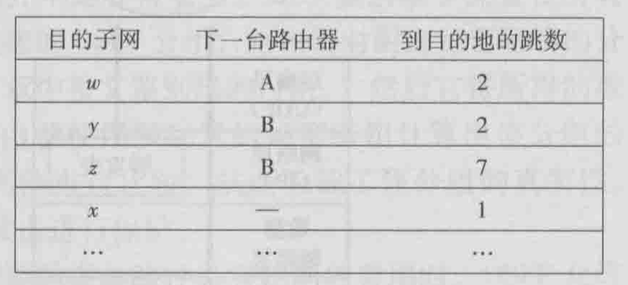
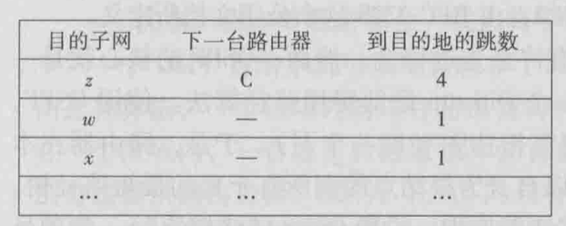
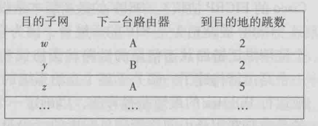
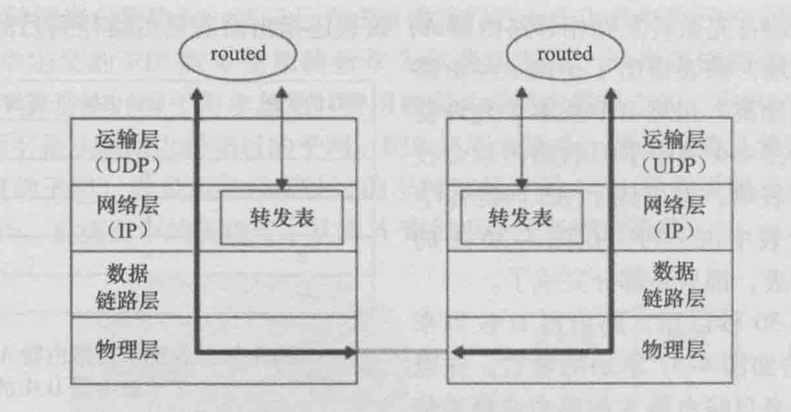
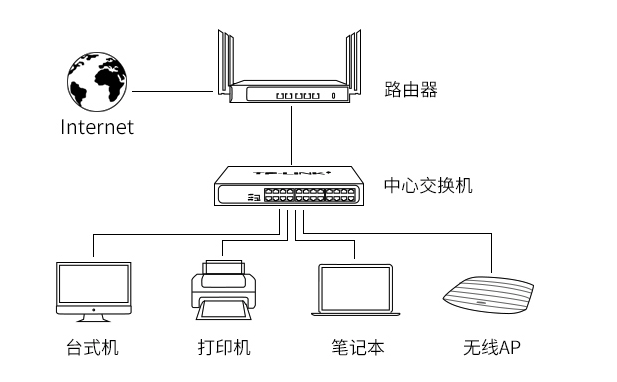
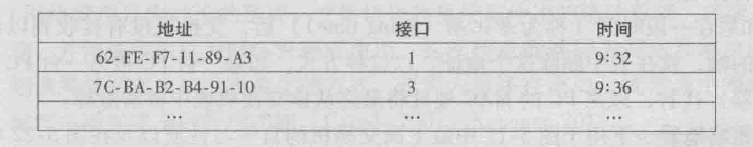
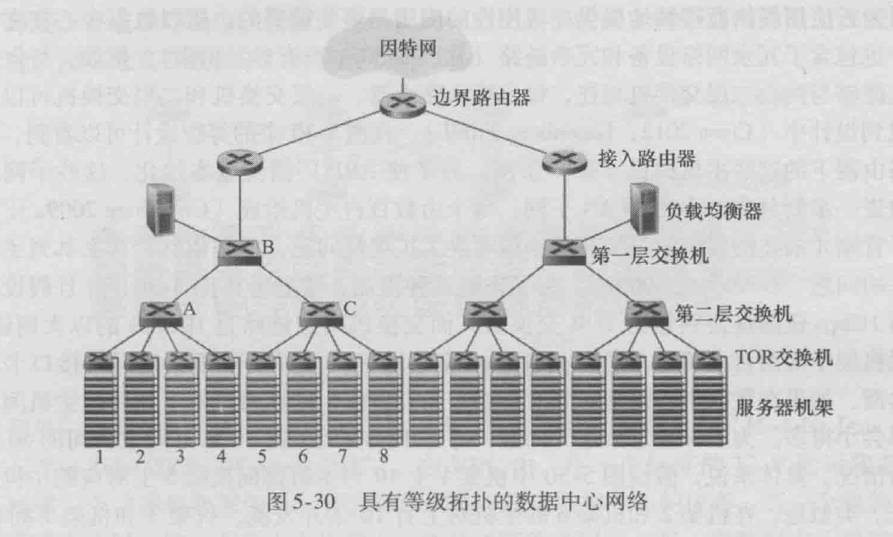
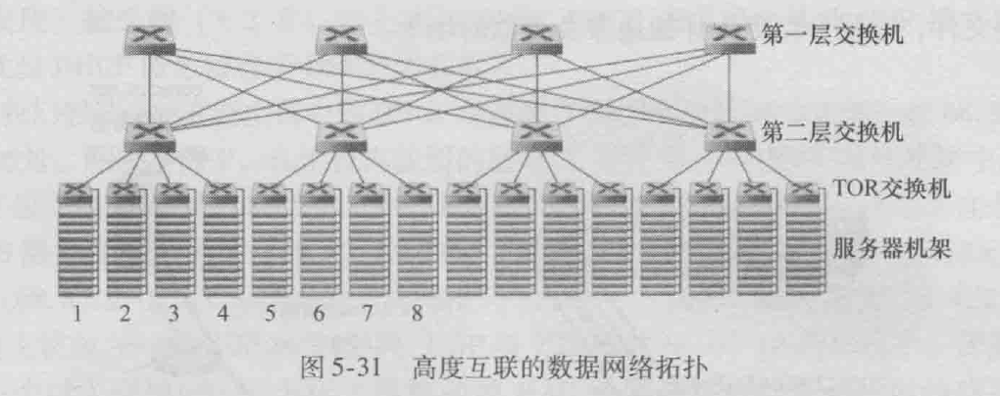
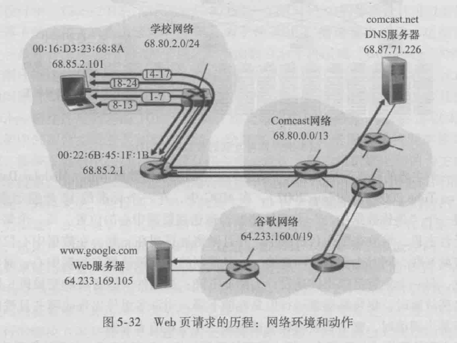

网络层
- 是否对ip包分片，取决于输出链路的mtu，如果包大小大于mtu（可能500多到1500字节），那么就会自动分片
- 分片有3个不可或缺字段：ip包的唯一标识（ID)、字节偏移offset、结束标志（0或1，1表示还没结束，0表示当前已是最后一个片）
- 分片是ipv4的机制，且有安全问题，ipv6没有分片，杜绝了安全隐患
分片重组是在目的地端主机上进行的，路由器只可能做分片，而不会做重组
主机和物理链路之间的边界叫做接口
每个接口有自己的ip地址，所以ip地址技术是与接口关联，而不是和主机或路由器
子网：直接互联并与其他网络岛隔离的主机接口+路由器接口组成子网
子网掩码：例如223.1.1.0/24，/24就是子网掩码
网络层有三个主要组件：IP协议、路由选择协议(RIP、OSPF、BGP）、因特网控制报文协议ICMP
查看和修改系统的mtu值：
查看：
ifconfig eth0
修改：
ifconfig eth0 mtu 1460
DHCP动态主机配置协议
四大步骤：
- DHCP发现报文，用UDP，端口67，src ip为0.0.0.0，dst ip为255.255.255.255，广播一个发现报文，报文里包含一个事务ID。
- DHCP提供报文，DHCP服务器收到广播而来的发现报文后，用一个提供报文做响应，src ip为自己的ip，dst ip为255.255.255.255，也是广播。因为DHCP服务器不一定唯一，所以客户机有选择权。提供报文包含，收到的发现报文的事务ID、向客户推荐的IP地址、IP地址的掩码、IP地址租用期（address lease time），租用期一般为几小时到几天。
- DHCP请求报文，客户机从1到多个提供报文中选择一个，并向该服务器发送DHCP请求报文。
- DHCP ACK报文，就是第三步的响应报文，告诉客户配置参数。
第四步完成后，客户就可以在租用期里使用这个ip。另外，DHCP也有延长租用期的办法。
NAT网络地址转换
- NAT是用来解决ipv4的ip地址不够用问题的
- NAT会使得外部主机不能直接访问内网主机（内网主机不可见），因为内网主机没有自己的全球唯一ip地址
- NAT用一张转换表来双向转发数据包
- 内网主机可以主动访问外网，反过来就不行
- NAT的存在对实现p2p应用很不好
- 应用NAT穿越技术，可以改善p2p应用的通讯问题
NAT穿越：https://www.jianshu.com/p/84e8c78ca61d
ICMP控制报文协议
- 常用于差错报告，例如目的地不可达时，中间路由器就会返回类型3的ICMP报文
- ICMP协议是建立在IP协议上面的，因为是用IP分组承载的。类似TCP、UDP。但一般认为ICMP是属于网络层的协议。
- ICMP报文组成：类型、编码。编码可理解为大类型里的子类型。wiki
ping程序： 发一个ICMP[8,0]报文，目的主机发回一个ICMP[0,0]的报文。
源抑制报文：从wiki可以看到已经deprecated了，最初是用来做拥塞控制的，不过tcp自己有拥塞控制，所以没卵用。
traceroute：原理就是发送一系列IP数据报，每个数据报携带UDP报文，目的地ip为目标主机，端口号设置为不可达的端口号。关键的，第一个数据报的TTL设为1，第二个的TTL为2，以此类推。当第n个数据报到达第n台路由器时，第n台路由器发现这个数据报的TTL正好过期，然后就会发给源主机一个ICMP[11,0]，携带了该路由器的ip地址。然后每个数据报都设置了定时器，收到回复时就可以算出往返延迟RTT。
traceroute还有个问题是何时停止发送udp报文，这是通过ICMP的类型和编码字段判断的，因为如果目的地主机在线，那么最终会返回一个ICMP[3,3]，表示目的主机端口不可达。
ipv6
改进：
- 去掉了分片功能，因为分片功能是耗时操作，去掉后能提高路由器性能
- 没有分片后，如果包太大，就无法发进链路层，只能丢弃，并返回ICMP差错报文，让发送方重新发一个小的
- 去掉了首部校验和，因为传输层协议、链路层协议也会做校验和，所以多余了。另外，因为IP头部有个动态的跳数，会导致每次修改跳数都得重新计算校验和，影响性能。
- 选项字段从IP首部去掉，但依然可以存在选项，方法是用“下一个头部”字段来实现，就是说选项信息是一个可选的头部。
- 去掉了选项后，ipv6的头部就是定长的40字节，非常高效。
2个ipv6主机之间通讯，可能会经过一段由仅支持ipv4的主机组成的路径，这时可以用隧道技术，把ipv6分组，放到ipv4分组的有效载荷里。
路由选择算法
全局式算法：路由器拥有网络拓扑信息、连通信息、链路费用信息，从而算出最优路径。也称为链路状态算法。链路费用一般取决于链路承载流量。
分散式算法：路由器没有网络链路信息，而只需要拥有和路由器直接相连链路的费用信息就可开始工作。通过迭代、和邻居交换信息，就能逐渐计算出到达某目的地结点的最低费用路径。
静态算法：依靠人工。
动态算法：拓扑或负载变化时更新。不过容易受路由选择循环、路由震荡影响。
负载敏感算法：链路费用会动态地变化，以反映链路拥塞情况。
负载迟钝算法：相反的，对拥塞不敏感，费用固定。更普遍可行的方法。
路由震荡：用随机化的链路通告时间，可以改善震荡。
LS链路状态算法：基于无向图最短路算法。最坏情况n平方。
DV距离向量算法：是一种迭代、异步、分布式的算法。
互联网当前的路由算法
RIP，路由选择信息协议
- 路由选择表（routing table），也叫RIP表，包含该路由器的距离向量、转发表。
- 目的子网，就是把目的地路由器当成一个子网网络
- 跳数，理解为到目的子网的链接边数即可
转发表的结构：目的子网，下一台路由器，到目的子网的跳数。每个子网占一行。
转发表的状态是迭代的，不可能是实时获得整个网络的状态信息。
邻居路由器之间会互相通告最新的转发表信息。大概30秒一次。
如果邻居超过180秒没有发来报文，认为不可达，更新自己的路由表，并向其他存活的邻居发公告。
每次收到转发表信息，都可能导致当前路由器的所知的到达某个子网的跳数、下一跳路由器信息，产生更新，因为新的路径（跳数）可能会更短。



路由器可以主动询问邻居到指定目的地的费用（RIP请求报文）。基于UDP 520端口。
RIP是一个基于传输层UDP协议的应用层进程（叫routed），用UDP来控制IP路由。这也是一个特殊进程，因为它可以操作系统内核的转发表。
routed会和邻居路由器的routed进程相互联系。

OSPF
- 被设想为RIP的后继者，因为有许多先进特性
- 洪泛链路状态信息的链路状态协议 + Dijkstra最低费用路径算法
- 是基于完整信息状态的算法
- 各条链路费用可用网络管理员配置，如果都设为1，则退化成最少跳数路由选择（RIP）
- 管理员可以根据带宽大小来设置链路费用，反比，带宽越大，费用越低。
- 路由选择信息是广播到整个网络的，而不仅仅是邻居
- 当一跳链路状态（费用、连接/中断）变化时，更新并广播
- 即使无变化，也要定期广播
- OSPF报文直接承载于IP层，所以OSPF要自行实现可靠传输，链路状态广播功能。
优点：
- 安全，对网络成员有身份鉴别功能，从而鉴别假冒的OSPF协议包。但这是可选的功能。鉴别方法是在每台路由器上配置一样的共享密钥，发包时，把密钥添加到分组里然后算一个MD5，再把MD5放到发包分组里，接收端收到分组后，对内容段添加自己的密钥并算一个MD5，并和收到的MD5进行比较鉴别。另外还有个序号，用来针对重放攻击。
- 负载均衡，如果去某个目的地存在多条费用一样的路径，OSPF允许同时使用多条路径，而不是只用其中一条。
- 层次结构
- 对多播的支持
OSPF可按区域划分（大区分小区），区域和区域外的联系要经过区域边界路由器，边界路由器都连到主干路由，从而实现区域之间的连通。
BGP 边界网关协议
- BGP确保了因特网中所有AS知道该子网以及如何到达那里。
- 没有BGP，那么每个子网将是隔离的，不为互联网其他部分所知。
- 是BGP这个协议将所有东西粘合在一起
- BGP基于TCP端口179，半永久TCP连接
- BGP作用：使得每个AS知道经过其相邻AS可达哪些目的地。
关键词定义：
- BGP对等方，BGP peers，即一条BG TCP连接的两端
- 沿着该连接发送所有BGP报文的TCP连接称为BGP会话
- 跨越2个AS的BGP会话称为外部BGP，eBGP；同理，内部的叫iBGP。
- 目的地：不是主机IP，而是CDIR化的前缀，表示一个子网或子网的集合，如：138.16.64/24。
- 前缀聚合：如果AS连接了4个子网，138.16.64/24，138.16.65/24，138.16.66/24，138.16.67/24，可以聚合成138.16.64/22
链路层
交换局域网-ARP协议
ARP表
每个主机维护一张ARP表，key是IP地址（所在子网的其他主机的局域网地址），value是MAC地址，并且有一个ttl，指明这key到value的映射关系什么时候过期。
适配器、接口、ARP模块、MAC地址
一个接口对应一个适配器、一个ARP模块、一个MAC地址
例子：同子网下的ARP
主机10.10.10.1要发送一个数据报，给本子网上的另一台主机10.10.10.2或路由器
分2种情况：
- 发送主机的ARP表有目的主机ip的MAC地址：直接可以发。
- 发送主机没有目的主机的MAC地址：发送方用ARP协议来解析这个目的ip地址。
ARP解析过程：
- 发送主机构造一个ARP分组（ARP packet），发送IP地址、接收IP地址、MAC地址。ARP分组细分为查询分组和响应分组，格式一样。
- 发送方把ARP查询分组送到适配器，并且指示适配器用MAC广播地址FF-FF-FF-FF-FF-FF发送它
- 适配器在链路层帧中封装这个查询分组，用广播地址作为帧的目的地址，并把该帧传输进子网（广播）
- 同子网上的所有其他适配器都会收到这个ARP查询，因为地址是广播地址，所以适配器底层不能直接判断是否丢弃分组，而是向上传递给ARP模块。
- ARP模块检查自己的IP地址是否和分组的目的IP地址相匹配。
- 最终只有一个ARP模块会匹配，此时回发给最开始的发送主机一个响应分组（响应分组的目的MAC地址是已知的，不需要广播）。
- 发送主机收到响应分组，更新ARP表。
由此可见，ARP协议是一个同时跨越链路层和网络层边界的协议
例子：跨子网ARP
背景：1个路由器打通了2个子网，子网1的主机A想要发数据报给子网2的主机B
问题：目的地主机不在同一子网上，意味着即使已知目的主机的MAC地址，也不可能让链路帧直接送达
流程：
- 发送主机把数据帧发送到路由器接口1
- 路由器会看到该帧的目的地址是自己的接口1，于是解析链路帧，把数据报传递到路由器的网络层
- 路由器网络层观察数据报的ip目的地址，发现转发表里有这个子网（最长前缀匹配），并且知道得通过接口2转发这个数据报
- 接口2的适配器把该数据报封装到一个新的帧中，帧的目的MAC地址就是主机B的MAC地址（路由器从自己的ARP表获得），并且将帧发送进子网2中
交换局域网-以太网
以太网是高速局域网。
21世纪早期，集线器（hub）换成了交换机（switch）。
交换机特点：
- 无碰撞
- 存储转发分组
交换机和路由器区别：交换机仅工作在2层，而路由器是3层。
以太网帧结构：
前同步码(Preamble) | 帧开始符（Start of frame delimiter, SFD）| 目的MAC地址 | 源MAC地址 | tag (optional) | 类型（或长度）| 数据 | FCS，Frame check sequence（即CRC） | IPG(interpacket gap)
各字段占用字节数：
7 | 1 | 6 | 6 | 4(optional) | 2 | 46~1500 | 4 | 12
一帧里面要分为两部分，一部分是2层链路层的，一部分是1层物理层的。
物理层的：
- Preamble （用于链路2端的时钟同步，10101010····，且有唤醒接收适配器的作用）
- SFD（标明下一个字节为目的MAC字段，10101011，最后2位突然变成2个1，警告接收适配器重要的内容要来了）
- IPG (一个pause段，让接收者有时间准备接收下一个分组)
占7 + 1 + 12 = 20字节。
链路层的：
- 目的MAC地址
- 源MAC地址
- tag (optional)
- 类型（或长度）
- 数据 (3层协议数据)
- FCS (对接收网卡提供判断是否传输错误的一种方法，如果发现错误，丢弃此帧)
min：6 + 6 + 2 + 46 + 4 = 64字节，max：6 + 6 + 4 + 2 + 1500 + 4 = 1522字节
注意，数据字段是有填充需求的，即要让以太网帧至少有64字节。
另外，如果上下文是物理层，那么以太网帧应该叫以太网分组（Ethernet packet），以太网分组包括上面整个帧结构。
以太网技术特点：
- 向网络层提供无连接服务，类似3层数据报、4层UDP
- 向网络层提供不可靠服务，接收端无论是否正确接收，都不会做任何反馈，错帧直接丢弃。
交换局域网-链路层交换机

交换机的任务：接收入链路层帧，并将它们转发到出链路。
特点：
- 交换的是链路层帧，工作在2层
- 对子网中的主机和路由器透明
- 交换机有缓存，因为转发输出速率可能会超过输出接口的链路容量
转发&过滤
过滤和转发的实现，依赖于交换机表（switch table）。
交换机表包含局域网上某些主机和路由器的表项：

例子：假设有一个目的地地址为DD-DD-DD-DD-DD-DD的帧从交换机接口x到达，交换机用该MAC地址索引交换机表。有3种情况：
- 表中没有对于DD-DD-DD-DD-DD-DD的表项。交换机向除了接口x外的所有接口广播该帧。广播前，实际是把帧放到接口的缓冲区。
- 表中有一个表项将DD-DD-DD-DD-DD-DD与接口x联系起来。交换机丢失该帧。
- 表中有一个表项将DD-DD-DD-DD-DD-DD与接口y（y!=x）联系起来。该帧被转发到与接口y相连的局域网网段，交换机通过将该帧放到接口y的输出缓冲区完成转发功能。
自学习
- 交换机表初始为空
- 对于在每个接口接收到的每个入帧，该交换机在其表中存储：
- 帧里的源MAC地址
- 该帧到达的接口
- 当前时间
- 因为每条记录有时间戳，所以过期的记录会删除
自学习性质使得交换机变成即插即用设备，不需要做配置。
交换机和路由器的区别
共同点：
- 都是存储转发分组交换机
- 有时候相互可替代
不同点：
- 路由器使用网络层IP地址转发分组；交换机用MAC地址转发分组
- 路由器是3层设备；交换机是2层设备
各自特点优缺点：
交换机特点：
- MAC地址寻址扁平
- 为了防止广播帧的循环，交换网络的活跃拓扑限制为一颗生成树。
交换机优点：
- 即插即用
- 具有相对高的分组过滤和转发速率（只需要处理高到2层的帧，而路由器高至3层）
交换机缺点：
- 交换机对于广播风暴并不提供任何保护措施，即某主机故障并传输无尽的以太网广播帧，交换机将转发所有这些帧，导致整个以太网崩溃
- 所以如果没有生成树，会循环。而生成树限制了转发路径唯一。
路由器优点：
- 即使存在冗余路径，分组也不会循环
- 没有生成树限制。允许以丰富的拓扑结构构建因特网，例如：欧洲与北美之间的多条活跃链路。
- 对2层的广播风暴提供了防火墙保护。
路由器缺点：
- 不是即插即用（但DHCP使得路由器可以自动分配IP）
- 对每个分组的处理时间比交换机更长
选择策略：
- 通常，由几百台主机组成的小网络有几个局域网网段。对于这些小网络，交换机就足够了，因为它们不要求IP地址的任何配置就能使流量局部化并增加总计吞吐量。
- 如果是几千台主机，则需要路由器，因为路由器提供了更健壮的流量隔离方式和对广播风暴的控制，并在网络的主机之间使用更智能的路由。


实例：web页面请求的历程
背景：Bob用以太网电缆将他的电脑连到学校的以太网交换机，交换机又与学校的路由器相连，路由器和一个ISP（comcast）相连；comcast为学校提供DNS服务，所以DNS服务器在comcast网络里；DHCP服务器运行在路由器中。

第1步：Bob电脑连接网络
刚连接时，Bob电脑没有本机IP，所以第一步是获得IP。
- Bob电脑运行DHCP协议，生成DHCP请求报文，并将这个报文放入一个UDP报文段，UDP报文段的的目的地端口为67、源端口为68
- 该UDP报文段进而被放置在一个IP数据报中，数据报的目的地IP地址为255.255.255.255（广播地址）、源IP地址为0.0.0.0
- 包含DHCP请求报文的IP数据报则被放置在以太网帧中，以太网帧的目的MAC地址为FF:FF:FF:FF:FF:FF，这会使该帧广播到与交换机连接的所有设备，源MAC地址为Bob电脑的MAC地址00:16:D3:23:68:8A
- 该以太网帧是第一个由Bob电脑发送到以太网交换机的帧，该交换机在所有的出端口广播这个入帧
- 路由器在它的具有MAC地址00:22:6B:45:1F:1B的接口收到该广播以太网帧(该帧中包含DHCP请求)，从该以太网帧中抽取出IP数据报。因为该IP数据报的目的地IP地址为广播地址，所以该IP数据报的载荷被分解向上到达UDP模块，DHCP请求报文从该UDP报文段中抽取出来，此时路由器即DHCP服务器有了DHCP请求报文
- 假设路由器DHCP服务器能够以CIDR块68.85.2.0/24分配IP地址，DHCP服务器因此分配地址68.85.2.101给Bob电脑。
- 除了分配IP地址，DHCP服务器还需要将DNS服务器的IP地址（68.87.71.226）、默认网关路由器的IP地址（68.85.2.1）、子网块（68.85.2.0/24）（子网掩码），这些东西组成一个DHCP ACK报文。
- 该DHCP ACK报文被放入一个UDP报文段，UDP报文段被放入一个IP数据报，IP数据报被放入以太网帧中，这个以太网帧的源MAC地址是00:22:6B:45:1F:1B（归属网络的接口），目的地址是Bob电脑的MAC地址
- 包含DHCP ACK的以太网帧由路由器发给交换机，因为交换机是自学习的，并且先前从Bob电脑收到DHCP请求报文以太网帧，所以该交换机知道寻址到00:16:D3:23:68:8A的帧仅从通向Bob电脑的端口转发。
- Bob电脑接收到包含DHCP ACK的以太网帧，从里面抽出DHCP ACK报文，Bob电脑的DHCP客户端记录下它的IP地址和DNS服务器的IP地址，另外，它还在IP转发表中安装默认网关的IP地址68.85.2.1，Bob电脑将向该网关发送目的地址为其子网68.85.2.0/24以外的所有数据报。
第2步：DNS和ARP（1）
Bob电脑初始化好它的网络组件后，准备访问一个google的网页。
首先需要知道www.google.com的地址。
- Bob电脑生成一个DNS查询报文，将字符串www.google.com放入DNS报文的问题段，DNS报文被放进一个UDP报文段，UDP目的地端口为53；UDP报文进而被放入一个IP数据报， IP数据报的目的地IP地址为68.87.71.226（DNS服务器的IP地址！），源IP地址为68.85.2.101
- Bob电脑把这个IP数据报放入一个以太网帧，该帧将发送到Bob学校网络中的网关路由器（因为不在同子网），但Bob电脑并不知道DNS服务器的MAC地址，Bob电脑为了获得该网关路由器的MAC地址，需要使用ARP协议。
- Bob电脑生成一个具有目的地IP地址为68.85.2.1（默认网关）的ARP查询报文，将该ARP报文放置在一个具有广播目的地址（FF:FF:FF:FF:FF:FF）、源MAC地址为00:16:D3:23:68:8A(Bob电脑)的以太网帧中，并向交换机发送该以太网帧，交换机将该帧广播到所有连接的设备，包括网关路由器。
- 网关路由器在通往学校网络的接口上接收到包含该ARP查询报文的帧，发现在ARP报文中目标IP地址68.85.2.1匹配自己的接口的IP地址，网关路由器因此发送一个ARP应答，指示它的MAC地址00:22:6B:45:1F:1B，对应IP地址68.85.2.1。它将ARP回答放在一个以太网帧中，其目的地址为00:16:D3:23:68:8A(Bob电脑)，并向交换机发送该帧，再由交换机将帧交付给Bob电脑。
- Bob电脑接收到包含ARP应答报文的以太网帧，从中拿出网关路由器的MAC地址。
- 此时，Bob电脑能够使包含DNS查询的以太网帧寻址到网关路由器的MAC地址。这个以太网帧的目的IP地址为68.87.71.226（DNS服务器）、MAC目的地址为00:22:6B:45:1F:1B（网关）。Bob电脑向交换机发送该帧，交换机将该帧交付网关路由器。
小结：
- Bob电脑已知DNS服务器IP，所以发送DNS请求，因为DNS服务器不在同子网，所以得先把请求发到默认网关，然而又发现没有网关的MAC地址，所以只能先发起ARP查询；
- ARP查询返回应答时，Bob电脑就能继续向网关发送包含DNS查询的udp包，但此时DNS请求还没有到达DNS服务器，下面继续。
第3步：DNS（2）
此时，网关路由器收到了来自Bob电脑的包含DNS查询的IP数据报。
- 网关路由器查找该数据报的目的地址68.87.71.226（DNS服务器），并根据其转发表决定该数据报应当发送到comcast网路中最左边的路由器。
- 这个comcast路由器收到转发来的IP数据报，也查看数据报的目的IP地址，并根据本地转发表确定出口，朝着DNS服务器继续转发。转发表由域内协议（RIP、OSPF、IS-IS）和域间协议（BGP）填写。
- 最终的，包含DNS查询的数据报到达了DNS服务器，DNS查询抽取出DNS查询报文，在自己的DNS数据库中查找名字www.google.com，找到包含对应www.google.com的IP地址（64.233.169.105）的DNS源记录（这里假设了该记录已缓存在本机，源于权威DNS服务器）。
- DNS服务器生成一条包含主机名www.google.com到IP地址（64.233.169.105）的DNS回答报文，放入UDP、UDP放入到寻址到Bob电脑的IP数据报，该数据报通过comcast网络反向转发到学校的路由器，并从这里经过以太网交换机到Bob电脑。
- Bob电脑收到这条DNS应答报文，从中取出www.google.com的IP地址。此时就可以真正地访问google网站了。
第4步：Web客户端-服务器交互：TCP和HTTP
这一步就是传输层和应用层的事情了：tcp三次握手，tcp承载了HTTP协议。
博主将十分感谢对本文章的任意金额的打赏^_^